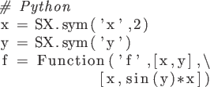

Next: 5. Generating C-code Up: User Documentation for CasADi Previous: 3. Symbolic framework
Function objects are typically created with the syntax:
The name is mainly a display name that will show up in e.g. error messages or as comments in generated C code. This is followed by a set of arguments, which is class dependent. Finally, the user can pass an options structure for customizing the behavior of the class. The options structure is a dictionary type in Python, a struct in MATLAB or CasADi's Dict type in C++.
A Function can be constructed by passing a list of input expressions and a list of output expressions:
|
 |
|
|
which defines a function . Note that all function objects in CasADi, including the above, are multiple matrix-valued input, multiple, matrix-valued output.
MX expression graphs work the same way:
|
|
|
|
When creating a Function from expressions like that, it is always advisory to name the inputs and outputs as follows:
|
|
|
|
Naming inputs and outputs is preferred for a number of reasons:
f.jacobian('x','q') instead of f.jacobian(0,1).
For Function instances - to be encountered later - that are not created directly from expressions, the inputs and outputs are named automatically.
To call a function object, you either pass the argument in the correct order:
|
|
|
|
r0: [1.1, 1.1] q0: [-0.17352, -0.17352]
or the arguments and their names as follows, which will result in a dictionary (dict in Python, struct in MATLAB and [language=C++]std::map<std::string, MatrixType> in C++):
![\begin{lstlisting}[language=Python]
...](img104.png)
|
|
|
res: {'q': DM([-0.17352, -0.17352]), 'r': DM([1.1, 1.1])}
When calling a function object, the dimensions (but not necessarily the sparsity patterns) of the evaluation arguments have to match those of the function inputs, with two exceptions:
When the number of inputs to a function object is large or changing, an alternative syntax to the above is to use the call function which takes a Python list / MATLAB cell array or, alternatively, a Python dict / MATLAB struct. The return value will have the same type:
|
|
|
|
res: [DM([1.1, 1.1]), DM([-0.17352, -0.17352])]
res: {'q': DM([-0.17352, -0.17352]), 'r': DM([1.1, 1.1])}
This might speed up the calculations significantly, but might also cause extra memory overhead.
Given a function for evaluating , ..., , we can use CasADi to automatically formulate a function . This function includes a guess for to handle the case when the solution is non-unique. The syntax for this, assuming for simplicity, is:
|
|
|
|
where the rootfinder function expects a display name, the name of a solver plugin (here a simple full-step Newton method) and the residual function.
Rootfinding objects in CasADi are differential objects and derivatives can be calculated exactly to arbitrary order.
For solvers of ordinary differential equations, the second equation and the algebraic variables must be absent.
An integrator in CasADi is a function that takes the state at the initial time x0, a set of parameters p, and a guess for the algebraic variables (only for DAEs) z0 and returns the state vector xf, algebraic variables zf and the quadrature state qf, all at the final time.
The freely available SUNDIALS suite (distributed along with CasADi) contains the two popular integrators CVodes and IDAS for ODEs and DAEs respectively. These integrators have support for forward and adjoint sensitivity analysis and when used via CasADi's Sundials interface, CasADi will automatically formulate the Jacobian information, which is needed by the backward differentiation formula (BDF) that CVodes and IDAS use. Also automatically formulated will be the forward and adjoint sensitivity equations.
Consider for example the DAE:
An integrator, using the ''idas'' plugin, can be created using the syntax:
Integrating this DAE from 0 to 1 with ,  and using the guess , can
be done by evaluating the created function object:
and using the guess , can
be done by evaluating the created function object:
![\begin{lstlisting}[language=Python]
...](img129.png)
|
|
|
0.1724
The time horizon is assumed to be fixed4.1 and can be changed from its default [0, 1] by setting the options "t0" and "tf".
where
is the decision variable and
 is a known parameter vector.
is a known parameter vector.
An NLP solver in CasADi is a function that takes the parameter value, the bounds and a guess for the primal-dual solution and returns the optimal solution. Unlike integrator objects, NLP solver functions are currently not differentiable functions in CasADi.
There are several NLP solvers interfaced with CasADi. The most popular one is IPOPT, an open-source primal-dual interior point method which is included in CasADi installations. Others, that require the installation of third-party software, include SNOPT, WORHP and KNITRO. Whatever the NLP solver used, the interface will automatically generate the information that it needs to solve the NLP, which may be solver and option dependent. Typically an NLP solver will need a function that gives the Jacobian of the constraint function and a Hessian of the Lagrangian function (
 with respect to
with respect to  .
.
| (4.5) |
A solver for this problem, using the ''ipopt'' plugin, can be created using the syntax:
Once the solver has been created, we can solve the NLP, using as an initial guess, by evaluating the function S:
|
|
|
|
******************************************************************************
This program contains Ipopt, a library for large-scale nonlinear optimization.
Ipopt is released as open source code under the Eclipse Public License (EPL).
For more information visit http://projects.coin-or.org/Ipopt
******************************************************************************
This is Ipopt version 3.12.3, running with linear solver ma57.
Number of nonzeros in equality constraint Jacobian...: 3
Number of nonzeros in inequality constraint Jacobian.: 0
Number of nonzeros in Lagrangian Hessian.............: 2
Total number of variables............................: 3
variables with only lower bounds: 0
variables with lower and upper bounds: 0
variables with only upper bounds: 0
Total number of equality constraints.................: 1
Total number of inequality constraints...............: 0
inequality constraints with only lower bounds: 0
inequality constraints with lower and upper bounds: 0
inequality constraints with only upper bounds: 0
iter objective inf_pr inf_du lg(mu) ||d|| lg(rg) alpha_du alpha_pr ls
0 6.2500000e+01 0.00e+00 9.00e+01 -1.0 0.00e+00 - 0.00e+00 0.00e+00 0
1 1.8457621e+01 1.48e-02 4.10e+01 -1.0 4.10e-01 2.0 1.00e+00 1.00e+00f 1
2 7.8031530e+00 3.84e-03 8.76e+00 -1.0 2.63e-01 1.5 1.00e+00 1.00e+00f 1
3 7.1678278e+00 9.42e-05 1.04e+00 -1.0 9.32e-02 1.0 1.00e+00 1.00e+00f 1
4 6.7419924e+00 6.18e-03 9.95e-01 -1.0 2.69e-01 0.6 1.00e+00 1.00e+00f 1
5 5.4363330e+00 7.03e-02 1.04e+00 -1.7 8.40e-01 0.1 1.00e+00 1.00e+00f 1
6 1.2144815e+00 1.52e+00 1.32e+00 -1.7 3.21e+00 -0.4 1.00e+00 1.00e+00f 1
7 1.0214718e+00 2.51e-01 1.17e+01 -1.7 1.33e+00 0.9 1.00e+00 1.00e+00h 1
8 3.1864085e-01 1.04e-03 7.53e-01 -1.7 3.58e-01 - 1.00e+00 1.00e+00f 1
9 0.0000000e+00 3.19e-01 0.00e+00 -1.7 5.64e-01 - 1.00e+00 1.00e+00f 1
iter objective inf_pr inf_du lg(mu) ||d|| lg(rg) alpha_du alpha_pr ls
10 0.0000000e+00 0.00e+00 0.00e+00 -1.7 3.19e-01 - 1.00e+00 1.00e+00h 1
Number of Iterations....: 10
(scaled) (unscaled)
Objective...............: 0.0000000000000000e+00 0.0000000000000000e+00
Dual infeasibility......: 0.0000000000000000e+00 0.0000000000000000e+00
Constraint violation....: 0.0000000000000000e+00 0.0000000000000000e+00
Complementarity.........: 0.0000000000000000e+00 0.0000000000000000e+00
Overall NLP error.......: 0.0000000000000000e+00 0.0000000000000000e+00
Number of objective function evaluations = 11
Number of objective gradient evaluations = 11
Number of equality constraint evaluations = 11
Number of inequality constraint evaluations = 0
Number of equality constraint Jacobian evaluations = 11
Number of inequality constraint Jacobian evaluations = 0
Number of Lagrangian Hessian evaluations = 10
Total CPU secs in IPOPT (w/o function evaluations) = 0.003
Total CPU secs in NLP function evaluations = 0.000
EXIT: Optimal Solution Found.
proc wall num mean mean
time time evals proc time wall time
nlp_f 0.000 [s] 0.000 [s] 11 0.00 [ms] 0.00 [ms]
nlp_g 0.000 [s] 0.000 [s] 11 0.00 [ms] 0.01 [ms]
nlp_grad_f 0.000 [s] 0.000 [s] 12 0.00 [ms] 0.00 [ms]
nlp_jac_g 0.000 [s] 0.000 [s] 12 0.00 [ms] 0.00 [ms]
nlp_hess_l 0.000 [s] 0.000 [s] 10 0.00 [ms] 0.00 [ms]
all previous 0.000 [s] 0.000 [s]
callback_prep 0.000 [s] 0.000 [s] 11 0.00 [ms] 0.01 [ms]
solver 0.000 [s] 0.004 [s]
mainloop 0.000 [s] 0.004 [s]
x_opt: [0, 1, 0]
There are two different ways to solve QPs in CasADi, using a high-level interface and a low-level interface. They are described in the following.
If the objective function is not convex, the solver may or may not fail to find a solution or the solution may not be unique.
To illustrate the syntax, we consider the following convex QP:
To solve this problem with the high-level interface, we simply replace nlpsol with qpsol and use a QP solver plugin such as the with CasADi distributed qpOASES:
![\begin{lstlisting}[language=Python]
...](img145.png)
qpOASES -- An Implementation of the Online Active Set Strategy.
Copyright (C) 2007-2015 by Hans Joachim Ferreau, Andreas Potschka,
Christian Kirches et al. All rights reserved.
qpOASES is distributed under the terms of the
GNU Lesser General Public License 2.1 in the hope that it will be
useful, but WITHOUT ANY WARRANTY; without even the implied warranty
of MERCHANTABILITY or FITNESS FOR A PARTICULAR PURPOSE.
See the GNU Lesser General Public License for more details.
The created solver object S will have the same input and output signature as the solver objects created with nlpsol. Since the solution is unique, it is less important to provide an initial guess:
|
|
|
|
#################### qpOASES -- QP NO. 1 #####################
Iter | StepLength | Info | nFX | nAC
----------+------------------+------------------+---------+---------
0 | 1.866661e-07 | ADD CON 0 | 1 | 1
1 | 8.333622e-10 | REM BND 1 | 0 | 1
2 | 1.000000e+00 | QP SOLVED | 0 | 1
x_opt: [5, 5]
Encoding problem (4.6) in this form, omitting bounds that are infinite, is straightforward:
|
|
|
|
To create a solver instance, instead of passing symbolic expressions for the QP, we now pass the sparsity patterns of the matrices and . Since we used CasADi's DM-type above, we can simply query the sparsity patterns:
![\begin{lstlisting}[language=Python]
...](img154.png)
|
|
|
qpOASES -- An Implementation of the Online Active Set Strategy. Copyright (C) 2007-2015 by Hans Joachim Ferreau, Andreas Potschka, Christian Kirches et al. All rights reserved. qpOASES is distributed under the terms of the GNU Lesser General Public License 2.1 in the hope that it will be useful, but WITHOUT ANY WARRANTY; without even the implied warranty of MERCHANTABILITY or FITNESS FOR A PARTICULAR PURPOSE. See the GNU Lesser General Public License for more details.
The returned Function instance will have a different input/output signature compared to the high-level interface, one that includes the matrices and :
|
|
|
|
#################### qpOASES -- QP NO. 1 #####################
Iter | StepLength | Info | nFX | nAC
----------+------------------+------------------+---------+---------
0 | 1.866661e-07 | ADD CON 0 | 1 | 1
1 | 8.333622e-10 | REM BND 1 | 0 | 1
2 | 1.000000e+00 | QP SOLVED | 0 | 1
x_opt: [5, 5]
2016-03-23